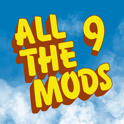
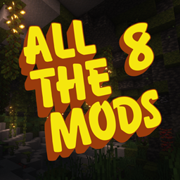
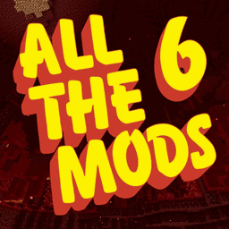
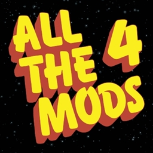
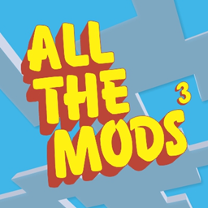
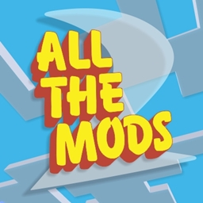
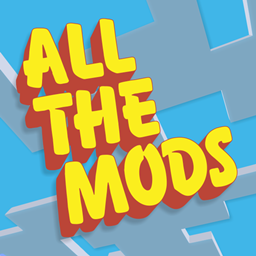

All The Mods (ATM) là một chuỗi modpack nổi tiếng tập trung vào công nghệ, phép thuật, xây dựng hệ thống và tự do sáng tạo.
All The Mods phù hợp cho người chơi thích tối ưu, tư duy hệ thống và khám phá nội dung endgame đồ sộ.
| Trong All The Mods, mục tiêu chinh phục cuối cùng không phải là đánh boss mà là chế tạo được All The Mods Star.
| Đây là vật phẩm endgame đại diện cho việc người chơi đã làm chủ gần như toàn bộ nội dung của modpack, bao gồm công nghệ, phép thuật và tự động hóa.
| Mỗi phiên bản All The Mods (ATM 10, 9, 8...) đều có công thức chế tạo khác nhau, và mức độ phức tạp ngày càng cao qua từng version.
Latest version: 10.0.12
Minecraft: 1.20+
Release year: 2024–2025

Latest version: 9.1.8
Minecraft: 1.19.2
Release year: 2023

Latest version: 8.2.8
Minecraft: 1.18.2
Release year: 2022
Latest version: 7.10.8
Minecraft: 1.16.5
Release year: 2021

Latest version: 6.4.9
Minecraft: 1.15.2
Release year: 2020
Latest version: 5.13.7
Minecraft: 1.12.2
Release year: 2019

Latest version: 4.12.1
Minecraft: 1.12.2
Release year: 2018

Latest version: 3.1.5
Minecraft: 1.10.2
Release year: 2017

Latest version: 2.4.0
Minecraft: 1.7.10
Release year: 2016

Latest version: 1.5.2
Minecraft: 1.7.10
Release year: 2015